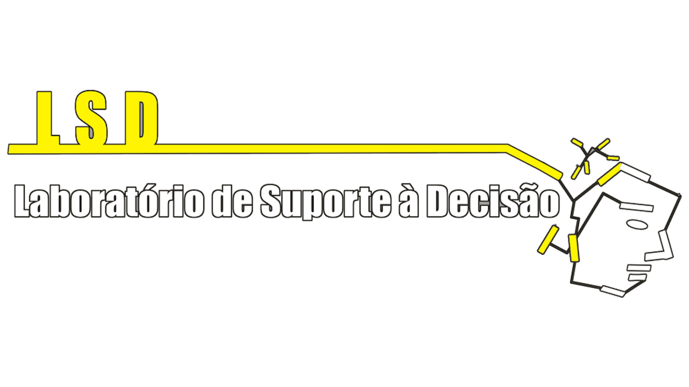

LABAC
LABAC - Laboratório de Bacteriologia
Docente responsável:
Graciene do Socorro Taveira Fernandes

Localização: Bloco 9, sala 08
Resumo:
O Laboratório de Bacteriologia (Labac) foi criado em 2019 visando realizar e apoiar diversos projetos envolvendo a Microbiologia Ambiental, de modo especial, pesquisas que evolvam a Bacteriologia (estudo das bactérias). O Labac é formado principalmente por alunos do curso de Bacharelado em Ciências Biológicas do ICTA, mas conta com a participação de alunos de outros cursos, além de alunos de Pós-Graduação dos cursos de Especialização em Saneamento e Tecnologia Hídrica (PPGSantech), Mestrado em Biociências (PPGBio) e Mestrado em Sociedade, Ambiente e Qualidade de Vida (PPGSAQ) da UFOPA.
Com esse time, o Labac desenvolve atividades de ensino, pesquisa e extensão, auxilia nas demandas de outras unidades da instituição e colabora com a formação de recursos humanos. O Labac se dedica às pesquisas na área da Microbiologia Geral e Aplicada, além de focar no estudo da Diversidade bacteriana da Região Oeste do Pará, Resistência antimicrobiana e Prospecção de substâncias biológicas de interesse produzidas por microrganismos isolados na região.
Projetos de Pesquisa:


LAPAM
LAPAM - Laboratório de Algas e Plantas da Amazônia
Docente responsável:
Davia Marciana Talgatti

Resumo:
O LAPAM é o Laboratório de Algas e Plantas da Amazônia e está localizado no Campus de Oriximiná da Ufopa. O Lapam conta com um espaço de 49m2 e com equipamentos de microscopia (microscópio de contraste de interferência, microscópio invertido e estereomicroscópio de alta resolução com captura de imagem, todos da marca Zeiss) e análises da água.
Além disso, conta com dois bolsistas de Iniciação Científica, três de Pibic-EM, cinco mestrandos, dois professores colaboradores da área da Botânica e diversos graduandos que desenvolvem seus Trabalhos de Conclusão de Curso. Nele são desenvolvidos estudos de fisiologia ambiental, bioindicação, taxonomia e ecologia de organismos fotossintetizantes aquáticos e terrestres. O laboratório tem financiamento externo (TNC-Brasil) e interno com investimento do Campus de Oriximiná e de dois PPGs da Ufopa
Além de pesquisa o Lapam desenvolve trabalhos de Extensão e está envolvido em quatro projetos de PEEX, unindo ensino, pesquisa e extensão em comunhão com as escolas de ensino básico do município de Oriximiná. O laboratório é coordenado pela Profa. Dra. Dávia Talgatti, que é membro do comitê geral do Programa Flora do Brasil.
Endereço: Campus Oriximiná: Laboratório III, bloco que laboratórios do Campus - Rodovia PA 439, N° 257 - Oriximiná, Pará - CEP: 68270-000
Telefone: (93) 99195-6553
Instagram: @lapamufopa
Email: davia.talgatti@ufopa.edu.br
Publicações científicas: https://www.ufopa.edu.br/oriximina/pesquisa/divulgacao-cientifica/
Visita virtual: https://my.matterport.com/show/?m=1Sb6AGMwDCb
LSD
LSD - Laboratório de Suporte à decisão
Docente responsável: Guilherme Augusto Barros Conde
O LSD-UFOPA vem ao longo dos últimos anos criando e consolidando estratégias e ferramentas para estudar sistemas complexos, por intermédio de cooperações e intercâmbio com o Laboratório de Estudos Epidemiológicos da Universidade do Estado do Pará (LEE-UEPA), o qual vem se especializando em pesquisa e desenvolvimento na área da epidemiologia espacial, tendo como foco principal doenças negligenciadas na Amazônia.
Além dessa parceria, o LSD-UFOPA também mantém cooperação técnica científica com o Laboratório de Dermatologia e Imunologia UEPA/UFPA/Marcello Candia, coordenado pelo professor Dr. Claudio Guedes Salgado, que é referência no tratamento de doenças negligenciadas na região norte do país e possui convênio com instituições de ensino e pesquisa nacionais e internacionais.
O Laboratório de Suporte à Decisão (LSD-UFOPA), atua principalmente na análise de dados com a utilização de técnicas da Inteligência Computacional e Análise Espacial. Possui área física de 60 m2 equipado com uma rede de computadores interligada através de fibra óptica com a internet do campus Tapajós da UFOPA, possui 8 notebooks, 02 computadores all-In-one, 02 impressoras Tanque de tinta e 03 GPSs. O laboratório possui mesas e cadeiras suficientes para alocar 15 alunos e 5 pesquisadores de forma simultânea, além de um espaço para reuniões e armários individuais.
Colaborações e parcerias:
O LSD-UFOPA vem ao longo dos últimos anos consolidando cooperações e intercâmbio com o Laboratório de Estudos Epidemiológicos da Universidade do Estado do Pará (LEE-UEPA), coordenado pela professora Mara Conde, o qual vem se especializando em pesquisa e desenvolvimento na área da epidemiologia espacial, tendo como foco principal doenças negligenciadas.
Além disso, mantém cooperação técnica científica com o Laboratório de Dermatologia e Imunologia UEPA/UFPA/Marcello Candia, coordenado pelo professor Claudio Salgado, que é referência no tratamento da hanseníase na região norte do país.
LEBIQ
LEBIQ - Laboratório de Estudos Bioquímicos e Químicos
Docente responsável:
Paulo Sergio Taube Junior

Localização:Sala 24 do NTB

Resumo:
Atualmente trabalha com projetos voltados para a obtenção, caracterização e avaliação bioquímica de AgNPs obtidas a partir de síntese verde, avaliação da qualidade, atividade antioxidante e bioquímicas de alimentos (mel, frutas, extratos). Bem como avaliação in vivo do poder cicatrizante das AgNPs.
GESAQUI
GESAQUI - Grupo de Estudos em Sanidade Aquícola
Docente responsável: Gustavo Da Silva Claudiano

Resumo:
O Grupo de Estudos em Sanidade Aquícola (GESAQUI) faz parte dos programa de Pós-Graduação em Biociências da UFOPA. Veja algumas fotos do laboratório abaixo: